UDN
Search public documentation:
AnimSetEditorUserGuideKR
English Translation
日本語訳
中国翻译
Interested in the Unreal Engine?
Visit the Unreal Technology site.
Looking for jobs and company info?
Check out the Epic games site.
Questions about support via UDN?
Contact the UDN Staff
日本語訳
中国翻译
Interested in the Unreal Engine?
Visit the Unreal Technology site.
Looking for jobs and company info?
Check out the Epic games site.
Questions about support via UDN?
Contact the UDN Staff
UE3 홈 > 언리얼 에디터와 툴 > 애님세트 에디터 사용 안내서
UE3 홈 > 애니메이션 > 애님세트 에디터 사용 안내서
UE3 홈 > 애니메이터 / 시네마틱 아티스트 > 애님세트 에디터 사용 안내서
UE3 홈 > 애니메이션 > 애님세트 에디터 사용 안내서
UE3 홈 > 애니메이터 / 시네마틱 아티스트 > 애님세트 에디터 사용 안내서
애님세트 에디터 사용 안내서
문서 변경내역: Daniel Wright 작성. Josh Markiewicz, Lina Halper 업데이트. 홍성진 번역
개요
애님세트 에디터 열기
애님세트 에디터 인터페이스

- 메뉴바
- 툴바
- 브라우저 패널 - 메시, 애님, 모프 탭을 통해 스켈레탈 메시, 애니메이션 세트와 시퀸스, 모프 타겟 세트와 시퀸스 등이 로드된 브라우저를 볼 수 있습니다.
- 스켈레톤 트리 패널 - 브라우저 패널에 현재 선택된 스켈레탈 메시에 대한 스켈레톤의 계층 트리 구조를 표시합니다.
- 프로퍼티 패널 - 메시, 애니메이션 세트, 애니메이션 시퀸스나 모프 타겟 프로퍼티입니다.
- 미리보기 패널 - 브라우저 패널에 현재 선택된 스켈레탈 메시에 대한 천, 소켓 등과 같은 애니메이션이나 시뮬레이션을 미리봅니다.
- 상태바 - (왼쪽에) 현재 선택된 스켈레탈 메시에 대한 이름과 정보를, (오른쪽에) 애니메이션 시퀸스를 표시합니다.
메뉴바
파일
- 메시 LOD 임포트... - 특정 LOD에 대한 LOD 메시를 임포트합니다.
- 새 애님세트 - 빈 애님세트를 새로 만듭니다.
- PSA 임포트... - .PSA 파일 안에 포함된 애니메이션 시퀸스를 현재 선택된 애님세트로 임포트합니다.
- COLLADA 애니메이션 임포트... - COLLADA 파일 안에 포함된 애니메이션을 현재 선택된 애님세트로 임포트합니다.
- 새 모프 타겟 세트 - 모프 타겟 세트를 새로 만듭니다.
- 모프 타겟 임포트... - 모프 타겟(.PSK 파일)을 현재 선택된 모프 타겟 세트로 임포트합니다.
- 모프 타겟 LOD 임포트... - 특정 LOD에 대한 LOD 모프 타겟을 임포트합니다.
편집
- 되돌리기 - 지난 번 실행한 작업 되돌리기.
- 다시하기 - 지난 번 되돌린 작업 다시하기.
보기
- 스켈레톤 표시 - 현재 스켈레탈 메시용 스켈레톤 표시를 토글합니다.
- 애디티브 베이스 표시 - 애디티브 애니메이션을 볼 때의 기본 포즈를 표시합니다.
- 본 이름 표시 - 미리보기 패널에 현재 스켈레탈 메시용 스켈레톤의 본 이름 표시를 토글합니다.
- 참조 포즈 표시 - 미리보기 패널에 메시 기본 참조 포즈 내 메시를 강제로 렌더합니다.
- 메시 렌더링 모드 순환 - (스켈레톤 표시를 쉽게 하기 위해) 라이팅포함, 와이어프레임, 끄기 순으로 순환합니다.
- 미러 표시 - 현재 애니메이션을 메시에 미러링하여 표시하는 옵션입니다. 이 작업용으로 설정해 둔 사용가능한 미러링 테이블 셋업이 있어야 합니다. 상세 정보는 Animation Mirroring KR 페이지를 참고하십시오.
- 바닥 표시
- 그리드 표시 - 미리보기 패널에 그리드 표시를 토글합니다.
- 소켓 표시 - 미리보기 패널에 현재 스켈레탈 메시의 소켓 표시를 토글합니다.
- 바운드 표시 - 미리보기 패널에 현재 스켈레탈 메시의 바운드 표시를 토글합니다.
- 콜리전 표시 - 미리보기 패널에 현재 스켈레탈 메시의 콜리전 지오메트리 표시를 토글합니다.
- 미압축 애니메이션 표시 - 압축된 애니메이션 대신 미압축 애니메이션으로 미리보기를 토글합니다.
- 소프트 바디 4면체 표시 - 미리보기 패널에 현재 스켈레탈 메시용 소프트 바디 4면체(tetrahedron)의 (생성된 방식으로) 표시를 토글합니다.
- 모프 키 표시 - 미리보기 패널에 애니메이션 데이터로부터의 모프 키 웨이트(weight) 정보 표시를 토글합니다.

- 대체 본 웨이팅 편집 모드 - 선택된 본의 대체 본 웨이팅을 확인하며 편집할 수 있습니다. 현재 LOD용 대체 본 웨이팅이 있을 때만 활성화됩니다.
- 탄젠트 표시
- 벡터로 - 선택된 머티리얼 섹션의 각 버텍스 탄젠트를 표시하며, 버텍스를 선택하여 정보를 볼 수 있습니다.
- 텍스처로 - 탄젠트 벡터를 텍스처 UV로 매핑하여, 벡터의 방향을 시각화시켜 볼 수 있습니다.
- 노멀 표시
- 벡터로 - 선택된 머티리얼 섹션의 각 버텍스 노멀을 표시하며, 버텍스를 선택하여 정보를 볼 수 있습니다.
- 텍스처로 - 노멀 벡터를 텍스처 UV로 매핑하여, 벡터의 방향을 시각화시켜 볼 수 있습니다.
- 미러 표시 - UV 매핑용 미러링 정보 표시를 토글합니다.
- 머티리얼 섹션 표시 - 탄젠트/노멀/미러링 표시용으로 사용되는 머티리얼 섹션을 설정합니다.
메시
- LOD 자동 설정 - 미리보기 패널 화면상의 스켈레탈 메시 크기에 따라 자동 LOD 전환을 사용합니다.
- 강제 LOD 베이스 메시 - 미리보기 패널에 스켈레탈 메시의 베이스 LOD 메시를 강제로 표시하게 합니다.
- 강제 LOD 1 - 피리보기 패널에 스켈레탈 메시의 LOD 1 메시를 강제로 표시하게 합니다. LOD 1 메시가 없으면 꺼집니다.
- 강제 LOD 2 - 피리보기 패널에 스켈레탈 메시의 LOD 2 메시를 강제로 표시하게 합니다. LOD 2 메시가 없으면 꺼집니다.
- 강제 LOD 3 - 피리보기 패널에 스켈레탈 메시의 LOD 3 메시를 강제로 표시하게 합니다. LOD 3 메시가 없으면 꺼집니다.
- LOD 생성 - 스켈레탈 메시용 LOD 를 자동 생성합니다. Skeletal Mesh Simplification Tool KR 참고.
- LOD 제거하기... - 스켈레탈 메시로부터 특정 LOD 메시를 제거합니다.
- 미러 테이블 자동 빌드
- 미러 테이블 체크
- 미러 테이블을 클립보드로 복사 - 미러 테이블 내용물을 클립보드로 복사합니다.
- 미러 테이블을 선택된스켈메시로부터 복사
- 바운드 업데이트 - 스켈레탈 메시의 바운드를 강제로 재계산합니다.
- 본 이름을 클립보드로 복사 - 스켈레탈 메시의 모든 본 이름을 클립보트로 복사합니다.
- 메시 머티리얼 병합
- 본 이름 고치기
- 소켓 매니저 - 스켈레탈 메시의 소켓을 보고, 편집하고, 더하고, 빼는 소켓 매니저를 엽니다.
애님세트
- 애님세트 리셋
- 트랙 삭제 - 현재 애님세트 내 모든 애니메이션의 본 트랙을 삭제합니다.

- 모프 트랙 삭제 - 현재 애님세트 내 모든 애니메이션의 모프 키를 삭제합니다.
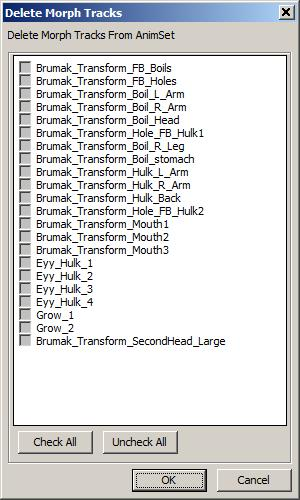
애님시퀸스
- 시퀸스 이름변경 - 브라우저 패널에 현재 선택된 애니메이션 시퀸스의 이름을 변경합니다.
- 시퀸스 삭제 - 브라우저 패널에 현재 선택된 애니메이션 시퀸스를 삭제합니다.
- 선택된 혹은 현재 애님세트로 시퀸스 복사 - 브라우저 패널에 현재 선택된 애니메이션 시퀸스를 콘텐츠 브라우저에 현재 선택된 애님세트로 복사합니다. 콘텐츠 브라우저에 선택된 애님세트가 없으면, 브라우저 패널에 현재 선택된 애님세트의 사본을 지정된 이름으로 새로 만듭니다.
- 선택된 애님세트로 시퀸스 이동 - 브라우저 패널에 현재 선택된 애니메이션 시퀸스를 콘텐츠 브라우저에 현재 선택된 애님세트로 이동, 즉 현재 애님세트에서는 삭제합니다.
- 애디티브 애니메이션으로 시퀸스 변환
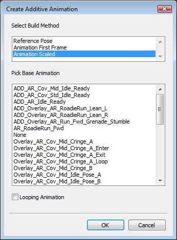
첫 단계는 빌드 방법 선택입니다. 이는 빼기 연산에 대한 베이스 포즈를 처리하기 위함입니다.| 참조 포즈 | 베이스 포즈로 메시의 Bind Pose를 사용합니다. |
| 애니메이션 첫 프레임 | 선택된 베이스 포즈 애니메이션의 첫 프레임을 사용합니다. |
| 애니메이션 스케일 | 서로 길이가 다른 경우, 선택된 베이스 포즈 애니메이션을 타겟 애니메이션에 맞게 스케일 조절합니다. (기본값) |
| 루핑 애니메이션 | 루핑 애니메이션용 마지막에서 첫 프레임으로의 보간을 처리하기 위함입니다. 타겟과 베이스 애니메이션의 길이가 다를 때만 관계가 있습니다. |
 애디티브 애니메이션에 대한 상세 정보는 애니메이션 개요 페이지를 참고해 보십시오. 애디티브 애니메이션
애디티브 애니메이션에 대한 상세 정보는 애니메이션 개요 페이지를 참고해 보십시오. 애디티브 애니메이션
- 애디티브 애니메이션 리빌드 -
- 선택된 시퀸스에 애디티브 애니메이션 추가 - 브라우저 패널에 현재 선택된 애니메이션 시퀸스에다 추가시킬 애디티브 애니메이션을 선택하는 대화창을 엽니다.
- 선택된 시퀸스에 애디티브 애니메이션 제거 - 브라우저 패널에 현재 선택된 애니메이션 시퀸스로부터 제거시킬 애디티브 애니메이션을 선택하는 대화창을 엽니다.
- 클립보드로 시퀸스 이름 복사 - 브라우저 패널에서 지난 번 선택된 애니메이션 시퀸스 이름을 클립보드로 복사합니다.
- 클립보드로 시퀸스 이름 목록 복사 - 브라우저 패널에 현재 선택된 애님세트의 애니메이션 시퀸스 전체 이름 목록을 클립보드로 복사합니다.
- 로테이션 적용 - 브라우저 패널에 선택된 애니메이션 시퀸스에 지정된 축만큼 지정된 회전값을 적용시킵니다.
- 현위치에서 리제로 -
- 현위치 이전 삭제 -
- 현위치 이후 삭제 -
노티파이 (Notify, 통지)
- 새 노티파이 - 애니메이션 통지를 새로 추가합니다.
- 노티파이 복사 - 현재 애니메이션 시퀸스의 애니메이션 통지를 지정된 대상 애니메이션 시퀸스로 복사합니다.
- 노티파이 정렬 - 현재 애니메이션 시퀸스가 배열상에 다르게 나타날 수 있도록 애니메이션 통지 순서를 변경합니다.
- 노티파이 시프트 - 현재 시퀸스에 대한 애니메이션 통지 전체를 지정된 시간만큼 shift 시킵니다.
- PSys 미리보기 모두 켜기 - 미리보기 패널에 파티클 이펙트 통지 미리보기를 켭니다.
- PSys 미리보기 모두 끄기 - 미리보기 패널에 파티클 이펙트 통지 미리보기를 끕니다.
모프세트 (MorphSet)
- 모프 타겟 업데이트 - 모프 타겟의 버텍스 버퍼 인덱스를 베이스 메시에 리매핑합니다. 로드시 인덱스 변화가 감지되면 자동으로 수행됩니다. 아직 완성되지 않은 기능이긴 합니다만, 베이스 메시의 웨이트가 변경된 것만 고칩니다. 버텍스 순서가 위치가 마야나 3DS Max에서 변경된 경우에는 작동하지 않습니다.
모프타겟 (MorphTarget)
- 모프 타겟 삭제 - 브라우저 패널에 선택된 모프 타겟을 삭제합니다.
애니메이션 압축
- 애니메이션 압축... - 애니메이션 압축 대화창 을 띄웁니다.
대체 본 웨이팅
- 메시 웨이트 임포트하기... - 전체 웨이트 교체용(하이 본 릭 vs 게임 본 릭) 또는 일부(고어 메시)용으로 사용할 대체 메시 웨이트를 임포트합니다.
- 메시 웨이트 토글... - 대체 메시 웨이트 표시를 켜거나 끕니다.
- 모든 메시 버텍스 표시... - 대체 웨이트 편집중일 때 모든 메시 버텍스를 (파랑으로) 표시하며, 선택된 본에 웨이트를 입힌 버텍스만 (빨강/흰색으로) 표시하던 것과 대비됩니다.
- 본 파괴 버텍스 웨이트 삭제... - [본 파괴 버텍스 웨이트 계산] 을 사용하여 본 파괴 버텍스 웨이트를 삭제/리셋시킵니다. BreakBoneNames 및 관련 데이터를 비웁니다.
창
- 브라우저: - 브라우저 패널을 표시합니다.
- 프로퍼티: - 프로퍼티 패널을 표시합니다.
- 스켈레톤 트리 - 스켈레톤 트리 패널을 표시합니다.
툴바
| 아이콘 | 설명 |
|---|---|
 | 현재 스켈레탈 메시용 스켈레톤 표시를 토글합니다. |
| 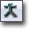 | 애디티브 애니메이션을 볼 때 베이스 포즈를 표시합니다. |
| 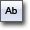 | 미리보기 패널에 본 이름 표시를 토글하는 옵션입니다. |
 | (스켈레톤 확인을 쉽게 하기 위해) 라이팅포함, 와이어프레임, 끄기 모드를 순환합니다. |
| 미리보기 패널에 메시가 강제로 참조 포즈 기본값으로 표시되게 하는 옵션입니다. | |
| 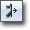 | 현재 애니메이션을 메시에 미러링하여 표시하는 옵션입니다. 사용가능한 미러링 테이블 셋업이 있어야 작동합니다. 상세 정보는 애니메이션 미러링 페이지를 참고하십시오. |
 | 소켓 매니저를 여는 옵션입니다. |
 | 현재 애니메이션 시퀸스에 애니메이션 통지를 새로 추가할 수 있게 해 주는 옵션입니다. 커스텀 애님노티파이 버튼 역시 추가 가능합니다. 자세한 것은 커스텀 애님노티파이 버튼 페이지 참고. |
 | 버텍스 클로쓰 시뮬레이션을 토글하는 옵션입니다. |
| 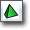 | 현재 Mesh 프로퍼티의 세팅을 사용하여 소프트바디 4면체(tetgrahedron)을 새로 만드는 옵션입니다. |
 | 소프트바디 미리보기 시뮬레이션을 토글하는 옵션입니다. |
 | 압축된 애니메이션 대신 미압축 애니메이션으로 미리보기를 토글하는 옵션입니다. |
| 애니메이션 압축 대화창 을 불러옵니다. | |
 | 미리보기 패널에 강제로 지정된 LOD 메시를 사용하게 하거나, 화면상의 메시 크기에 따라 자동 LOD 전환을 사용하게 할 수 있습니다. |
| 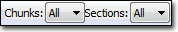 | 전체 스켈레탈 메시를 보는 것에 추가로 특정 청크나 섹션을 볼 수 있도록 합니다. 청크와 섹션 보기 부분 참고. |
 | 원래 속도, 0.5배속, 0.25배속, 0.1배속, 0.01배속 중에 선택할 수 있습니다. |
| 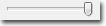 | 스켈레탈 메시에 있는 translucent(반투명) 머티리얼의 트라이앵글 그리기 순서를 시각화시켜 볼 수 있습니다. 반투명 머리칼 정렬 참고. |
| | 선택된 본의 대체 본 웨이팅(weight) 확인 및 편집. |
| 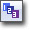 | 반투명 머리칼 정렬 참고. |
 | 트라이앵글 그리기 순서 중 TRISORT_CustomLeftRight를 좌우 어느쪽부터 할지 선택할 수 있습니다. 반투명 머리칼 정렬 참고. |
| 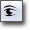 | 애니메이션 자동 리임포트 기능을 토글하는 옵션입니다. |
| 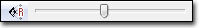 | 미리보기 패널 의 카메라 시야(FOV)를 설정할 수 있도록 해 줍니다. |
브라우저 패널
메시 탭

- 스켈레탈 메시 - 애님세트 에디터에서 미리볼 스켈레탈 메시를 설정합니다. 애니메이션은 이 메시에 적용됩니다.
- 부가 메시 (1-3) - 미리보기 패널에서 미리볼 부가 스켈레탈 메시를 설정합니다. 이 메시에는 애니메이션이 적용되지 않습니다.
애님 탭
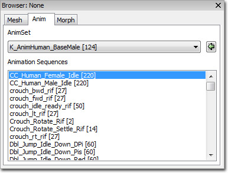
- 애님세트 - 애니메이션 시퀸스 목록을 채울 애님세트를 선택합니다.
- 애니메이션 시퀸스 - 선택된 애님세트의 애니메이션 시퀸스를 전부 표시합니다. 선택된 애니메이션 시퀸스가 미리보기 패널에 표시됩니다.
모프 탭

- 모프타겟세트 - 모프 타겟 목록을 채울 모프타겟세트를 선택합니다.
- 모프타겟 - 선택된 모프타겟세트의 모프 타겟을 전부 표시합니다. 웨이트를 변경하여 미리보기 패널에서 효과를 미리볼 수 있으며, 이름도 변경할 수 있습니다.
스켈레톤 트리 패널
창 메뉴 아래에 스켈레탈 계층구조를 켤 수 있는 옵션이 있습니다.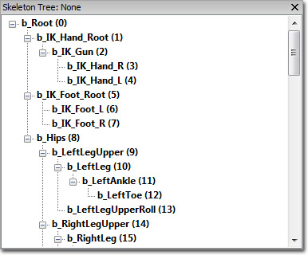
여기서 선택된 메시에 관련된 스켈레톤의 계층구조를 확인해 볼 수 있습니다. 본에 클릭하면 모델의 본을 반전시켜 보여주며, 본을 조작할 수 있는 위젯이 제공됩니다. 뷰포트에 있을 때 스페이스바를 치면 트랜슬레이션 및 로테이션 위젯으로 전환됩니다.위젯을 조작하면서, 현 애니메이션/스켈레탈 포스로부터의 이동 델타가 표시됩니다. 조작 도중 다른 본을 클릭하면 기존 본을 리셋하게 됩니다. 두껍게 표시된 본은 하나 이상의 버텍스가 해당 본에 웨이팅(weight, 가중)되어 있음을 나타냅니다.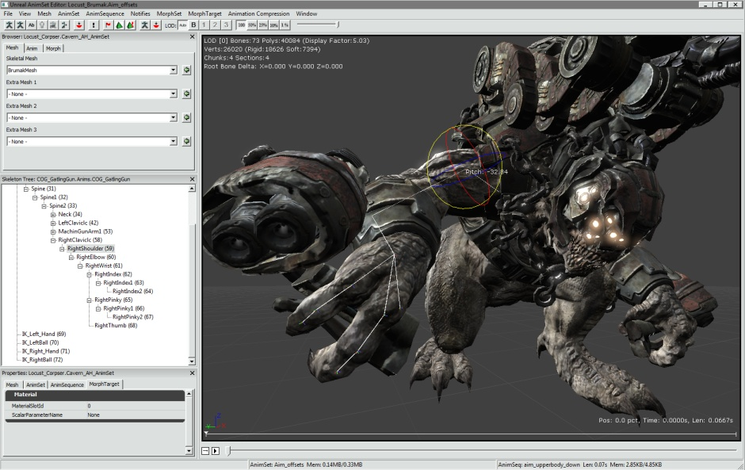
본에 오른클릭하면 선택 사항이 팝업 메뉴로 뜹니다. 여기서:
여기서: - 선택된 본 표시
- 선택된 본 숨김
- 선택된 본에 대한 렌더링 색 설정
- 선택된 본의 자식 표시
- 선택된 본의 자식 숨김
- 전체 본 계층구조를 클립보트에 텍스트로 복사
- 이 본과 부모간의 대체 본 웨이팅용 본 영향 파괴치를 계산합니다: 대체 본 웨이팅 편집 모드 도중 사용가능해 집니다.
- 모든 본에 대한 대체 본 웨이팅용 본 영향 파괴치를 삭제/리셋시킵니다: 대체 본 웨이팅 편집 모드 도중 사용가능해 집니다.
- 버텍스 블렌드 웨이트 렌더링을 끄거나 켭니다.

대체 본 웨이팅 편집 모드 (본 영향력 편집하기)
엔진은 스켈레탈 메시별로 대체 본 웨이팅 / 영향력(influence) "트랙"을 저장하는 개념을 지원합니다. 런타임에 이 트랙들을 본의 한 쌍 단위로 맞바꾸면 메인 스켈레탈 메시에서 깨끗이 때어낼 수 있습니다. 특정 본에 영향받은 각 버텍스는 대체 트랙에 있는 새로운 본 웨이트 세트로 맞바꿀 수 있습니다. 이를 통해 고어나 캐릭터 바디의 팔다리를 분해한 gibbing(잔해) 등의 효과가 가능합니다. 이렇게 셋업하려면 먼저 아티스트가 DCT 에 여러 메시를 만들어 둡니다. 이를테면 일반적인 운동 상태에서의 본 영향력을 지닌 것 하나와, 메인 바디에서 분리되는 것을 지원하기 위해 팔다리나 메시 섹션에 각기 다양한 웨이팅을 준 것들 말입니다. 첫 메시를 임포트한 이후, [대체 본 웨이팅 > 메시 웨이트 임포트...] 를 통해 대체 웨이트 메시를 임포트합니다. 어느 LOD 에 임포트해 올지 선택합니다. LOD 의 원본 메시를 다시 한 번 물어본 다음, 새 대체 메시를 물어옵니다. 여기서 메시 사이의 인덱스가 당연히 일치하려니 가정하고 요청합니다. 이 메시에서부터 LOD 에 대한 웨이트와 새 본 영향력 목록을 저장합니다. 이 대체 웨이트 트랙으로 스왑하려는 웨이트가 전체(FULL) 인지 부분(PARTIAL) 인지 묻는 창이 뜹니다. 전체 는 말 그대로입니다. 이 LOD 에 버텍스 웨이트가 켜져 있을 때, 모든 버텍스 본 웨이팅이 대체 트랙 데이터로 교체됩니다. 추가로 모델에 있는 RequiredBones 배열이 업데이트되어, 메시에 웨이팅되는 본 세트가 (서브셋이든 수퍼셋이든) 각기 다름을 알립니다. 부분 웨이트 스왑은 본 단위로 교체되는데, 고어형 효과를 내기 위해 특정 조인트가 끊어질 때 웨이팅을 교체하겠노라고 버텍스에 알리기 위함입니다. 메시에 대체 영향력 트랙이 있기에, 부분 웨이팅을 선택했다면 본 파괴도 지정해야 합니다. 먼저 툴바를 통해 대체 본 웨이팅 편집 모드(본 영향력 편집)으로 들어갑니다. 적절한LOD에 먼저 가있는지 확인해야 합니다. 현재 LOD에 대체 본 웨이팅이 없으면 메뉴가 뜨지 않습니다. 또한 편집 모드 동안에 LOD를 바꿀 수도 없습니다. 스켈레톤 트리에서, 부모와 파괴될 본들 사이의 전부를 클릭합니다. 하나씩 해도 되고, 복수 선택해도 됩니다. 선택되는 본은 각각 뷰에 빨간 버텍스로 표시되게 됩니다. 선택된 본이나 그 부모에 의해 영향받는 버텍스 전체를 나타냅니다.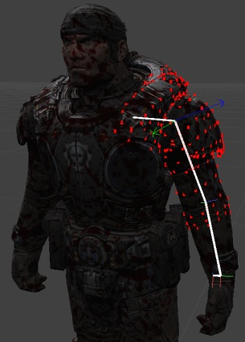
오른클릭하고 "본 파괴 버텍스 웨이트 계산"을 선택합니다. 선택된 본과 부모 둘 다에 의해 영향받는 버텍스가 있으면, 버텍스는 하얗게 변합니다.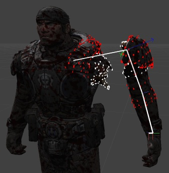
이처럼 하얀 버텍스는 해당 본이 게임에서 파괴될 때 영향력이 교체됩니다. 트랜슬레이션/로테이션 위젯을 사용하여 영향력 스왑 결과를 볼 수 있습니다. 위 예제에서의 분리는 완전 분리로, 메인 바디에서 스트레치되는 버텍스가 한 개도 없습니다. 파괴 계산 알고리즘은 꽤나 간단합니다. 두 메시 다에 웨이팅되지 않은 버텍스를 찾은 경우, 수동으로 추가하여 파괴할 수 있습니다. 그냥 빨간 버텍스를 더블클릭하면 하얗게 변하여 바로 목록에 추가되므로 스트레칭을 제거할 수 있습니다. 같은 식으로 버텍스를 제거할 수도 있습니다. 파괴가 일어날 때마다 본 이름이 스켈레탈 메시의 BoneBreakNames 변수에 추가됩니다. 이 배열은 메시를 다시 임포트해도 유지되며, 파괴 계산도 자동으로 다시 수행됩니다. 지난 임포트하기 동안의 버텍스 목록에 가한 수동 변경 사항은 포함되지 않습니다.
프로퍼티 패널
Mesh 프로퍼티
SkeletalMesh 프로퍼티:- Materials - 메시에 머티리얼을 할상하기 위한 머티리얼 슬롯 배열
- Clothing Assets - 클로딩 애셋
- Origin - 메시를 옮길 오프셋값
- Rot Origin - 메시를 회전시킬 오프셋값
- Skel Mirror Table - 스켈 미러 테이블.
- Skel Mirror Axis - 스켈 미러 축.
- Skel Mirror Flip Axis - 스켈 미러 플립 축.
- Bone Break Names - 본 파괴 이름.
- Bone Break Options - 본 파괴 옵션.
- LODInfo - 이 스켈레탈 메시용 LOD 목록. 각 LOD에 포함된 것은:
- Display Factor - 표시 인자. 이 LOD 사용을 시작할 화면상의 메시 크기를 설정합니다.
- LODHysteresis - LOD 히스테리시스. LOD 전환시 메시가 깜빡거리지 않게 하기 위해 사용되는 일종의 속임수 액터. 복잡한 것에서 간단한 것으로 넘어갈 때만 사용됩니다.
- LODMaterial Map - LOD머티리얼 맵. 이 LOD의 메시에 사용된 머티리얼을 설정하거나 덮어쓰기 위해 사용되는 베이스 메시의 Materials 배열에 매핑된 머티리얼 슬롯입니다.
- Enable Shadow Casting - 그림자 드리우기. 그림자 드리우기 여부에 대한 섹션별 설정.
- Triangle Sorting - 트라이앵글 정렬. 섹션별 트라이앵글 정렬에 사용할 방법.
- Per Poly Collision Bones - 폴리별 충돌 본. 영향을 끼치는 폴리에 대한 폴리 충돌별로 사용할 본 목록.
- Add To Parent Per Poly Collision Bone - 폴리별 충돌 본 부모에 추가. 폴리별 충돌 본 중 그 부모를 찾아보고 자식의 폴리를 부모에게 더할 본 목록.
- Per Poly Use Soft Weighting - 폴리별 소프트 웨이트 사용. 참이면 폴리별 충돌용으로 사용된 본에 소프트 웨이팅된 트라이앵글을 포함합니다.
- Force CPUSkinning - 강제로 CPU 스키닝. 참이면 강제로 CPU에서 스키닝이 수행되게 합니다. 클로쓰 시뮬레이션을 사용하려면 필수입니다.
- Use Full Precision UVs - 최대 정밀도 UV 사용. 참이면 표준인 절반 정말도 (8비트) UV 대신 전체 정밀도 (16비트) UV를 사용합니다.
- Use Packed Position - 팩 포지션 사용. 참이면 (8 바이트 절약된 4바이트) 압축 포지션 XTZ를 사용합니다. GPU 스키닝시에만 유용합니다.
- FaceFX Asset - 얼굴 애니메이션을 재생할 때 이 스켈레탈 메시가 사용하는 FaceFX 애셋을 설정합니다.
- Bounds Preview Asset - 경계 미리보기 애셋. 미리보기 패널에서 경계 미리보기시 사용되는 애셋을 설정합니다. LOD 거리 인자를 설정할 때의 안정성을 향상시킬 수 있습니다.
- Preview Morph Sets - 모프 미리보기 세트. 미리보기 패널에서 모프 타겟을 미리볼 때 사용되는 애셋. 에디터에서만 사용됩니다.
- LODBias PC - PC용으로 사용되는 LOD 편향. 사용될 최고 (가장 세밀한) LOD 입니다.
- LODBias PS3 - PS3용으로 사용되는 LOD 편향. 사용될 최고 (가장 세밀한) LOD 입니다.
- Source File Path - 소스 파일 경로. 애셋을 임포트한 파일 시스템 경로를 표시합니다.
- Source File Timestamp - 소스 파일 타임스탬프. 소스 파일을 시간을 표시합니다.
- Cloth Movement Scale Gen Mode - 클로쓰 이동 스케일 생성 모드. ClothMovementScale (클로쓰 이동 스케일) 테이블을 생성하는 데 사용되는 방법을 설정합니다.
- ECMDM_DistToFixedVert -
- ECMDM_VertexBoneWieght -
- ECMDM_Empty -
- Cloth To AnimMesh Max Dist - 클로쓰와 애님메시 최대 거리. 시뮬레이션되는 클로쓰 버텍스가 애니메이션 위치에서 최대로 움직일 수 있는 거리를 설정합니다.
- Limit Cloth To Anim Mesh - 클로쓰와 애님 메시 제한. 참이면 클로스 버텍스가 원래 애니메이션 위치 내에서 얼마나 움직일 수 있는지 제한합니다.
- Cloth Bones - 클로쓰 본. 클로쓰 피직스 시뮬레이션을 사용하여 시뮬레이션될 버텍스를 소유한 본 이름 배열.
- Cloth Hierarchy Levels - 클로쓰 계층 레벨. 0보다 크면 시뮬레이션 시간을 개선시키고 신축성을 줄이기 위해 클로쓰 시뮬레이션이 내부적으로 클로쓰를 작은 메시로 분할하게 됩니다. 이 값은 클로쓰를 몇 번이나 하위분할할 지를 나타냅니다.
- Enable Cloth Bend Constraints - 클로쓰 접힘 제약 켜기. 참이면 뒤틀림이나 접힘을 최소화하기 위해 constraint(제약)이 클로쓰에 적용되게 됩니다.
- Enable Cloth Damping - 클로쓰 제동 켜기. 참이면 제동이 클로쓰에 적용됩니다.
- Use Cloth COMDamping - 클로쓰 질량 중앙 제동 사용. 참이면 클로쓰 내부 속도에 center of mass damping(질량 중앙 제동)이 적용되게 됩니다.
- Cloth Stretch Stiffness - 클로쓰 신축성 강도. 클로쓰의 파티클을 엮는 데 사용되는 스프링 세기를 설정합니다.
- Cloth Bend Stiffness - 클로쓰 접힘 강도. 클로쓰가 접히지 않게 하는 데 사용되는 스프링 세기를 설정합니다. Enable Cloth Bend Constraints (클로쓰 접힘 제약 켜기)를 참으로 설정해야 합니다.
- Cloth Density - 클로쓰 밀도. 점의 질량을 계산할 때 점을 공유하는 삼각형의 크기에 이 값을 곱합니다. 클로쓰를 만든 다음에는 변경할 수 없는 값입니다.
- Cloth Thickness - 클로쓰 두께. 충돌을 계산할 때 고려되는 클로쓰의 두께를 설정합니다.
- Cloth Damping - 클로쓰 제동. 클로쓰 파티클에 적용될 제동력 양을 설정합니다. Enable Cloth Damping (클로쓰 제동 켜기)를 참으로 설정해야 합니다.
- Cloth Iterations - 클로쓰 반복처리. 클로쓰 시뮬레이션이 처리할 솔버 반복처리 횟수를 설정합니다. 값이 높아질 수록 계산 비용이 늘어나지만 시뮬레이션 품질이 향상됩니다.
- Cloth Hierarchy Iterations - 클로쓰 계층구조 반복처리. 클로쓰 계층구조 하위분할을 사용하는 경우, 각 하위메시가 솔버 반복처리를 얼마나 사용할 지를 결정하는 값입니다.
- Cloth Friction - 클로쓰 마찰. 클로쓰의 마찰 계수를 설정합니다. 다른 바디와 접했을 때 클로쓰의 이동을 제어하는 데 사용됩니다.
- Hard Stretch Limit - 강 신축 제한. 참이면 클로쓰 시뮬레이션에 의해 허용되는 신축량이 제한됩니다. Limit Cloth To Anim Mesh (클로쓰와 애님 메시 제한)을 참으로 설정해야 합니다.
- Hard Stretch Limit Factor - 강 신축 제한 인자. 클로쓰에 허용할 신축량을 설정합니다. 1.0 값은 신축은 없이 그냥 덜덜 떨기만 하게 됩니다. Hard Stretch Limit (강 신축 제한)을 참으로 설정해야 합니다.
- Enable Cloth Line Checks - 클로쓰 라인 체크 켜기. 참이면 라인 체크가 클로쓰에 대한 레이캐스트시에 수행되나, point and swept extent 체크는 클로쓰 AABB에 대해 수행됩니다.
- Enable Cloth Tearing - 클로쓰 찢기 켜기. 참이면 버텍스간 선분을 따라 클로쓰를 찢을 수 있습니다. Cloth Tear Reserve (클로쓰 찢기 예비) 프로퍼티를 사용하여 여분의 버텍스/인덱스를 예비해 둬야 합니다. 주: 접합(welding)을 사용중일 때 찢기는 꺼집니다.
- Cloth Tear Factor - 클로쓰 찢기 인자. 찢기를 켰을 때, 클로쓰가 찢어지기 전에 늘어나는 양을 설정합니다.
- Cloth Tear Reserve - 클로쓰 찢기 예비. 클로쓰 찢기로 생성되는 새 트라이앵글을 수용하기 위해 설정할 버텍스/인덱스 수를 설정합니다.
- Enable Valid Bounds - 사용가능한 경계 켜기. 참이면 사용가능한 경계를 넘는 클로쓰 버텍스는 삭제됩니다.
- Valid Bounds Min - 사용가능한 최소 경계. 사용가능한 경계의 최소 규모를 설정합니다.
- Valid Bounds Max - 사용가능한 최대 경계. 사용가능한 경계의 최대 규모를 설정합니다.
- Force No Welding - 강제로 접합 없앰. 참이면 메시에 중복 버텍스가 있어도 접합되지 않습니다.
- Cloth Relative Grid Spacing - 클로쓰 상대적 그리드 여백. 넓은 단계 충돌을 수행할 때 클로쓰가 분할될 그리드 쎌 크기를 설정합니다. 셀 크기는 클로쓰의 AABB에 상대적입니다.
- Cloth Pressure - 클로쓰 압력. 클로쓰의 내부 "공기" 압력을 설정합니다. Enable Cloth Pressure (클로쓰 압력 켜기)를 참으로 설정해야 합니다.
- Cloth Collision Repsonse Coefficient - 클로쓰 충돌 반응 계수. 클로쓰/리짓 바디 충돌용 반응 계수를 설정합니다.
- Cloth Attachment Response Coefficient - 클로쓰 부착 반응 계수. 리짓 바디 부착물이 클로쓰에 끼치는 영향력을 설정합니다.
- Cloth Attachment Tear Factor - 클로쓰 부착 찢기 인자. 부착물이 찢기거나/깨지기까지 견딜 수 있는 신축양을 설정합니다.
- Cloth Sleep Linear Velocity - 클로쓰 잠잠 선형 속도. 클로쓰가 잠잠해질 때까지 걸리는 최대 선형 속도를 설정합니다. 음수값이면 전역 기본값이 사용됩니다.
- Enable Cloth Ortho Bend Constraints - 클로쓰 직교 접힘 제약 켜기. 참이면 클로쓰 접힘을 최소화하는데 angular springs(각형 스프링) 제약이 사용됩니다. Enable Cloth Bend Constraints (클로쓰 접힘 제약 켜기)에서 사용된 거리 스프링보단 느리지만, 신축 저항에 무관합니다.
- Enable Cloth Self Collision - 클로쓰 자체 충돌 켜기. 참이면 클로쓰가 자체와도 충돌합니다.
- Enable Cloth Pressure - 클로쓰 압력 켜기. 참이면 클로쓰에 대한 압력이 켜집니다. 부풀게 할 수 있는 오브젝트를 시뮬레이션할 수 있습니다.
- Enable Cloth Two Way Collision - 클로쓰 2방향 충돌 켜기. 참이면 리짓 바디와의 2방향 충돌이 켜집니다.
- Cloth Special Bones - 클로쓰 특수 본. 특수 동작에 무관(sloth)한 것으로 간주되는 버텍스를 가진 본 목록입니다. 현재 얘들은, 고정되거나 파괴가능 부착물이거나 분리선을 포함하는 피직스 애셋에 부착되는 애들이라는 뜻입니다.
- Cloth Metal - 클로쓰 메탈. 참이면 클로쓰 시뮬레이션은 라짓 바디 안으로만 제한되어, 임팩트시에만 사용되게 합니다. 메탈같은 표면 시뮬레이션이 가능합니다.
- Cloth Metal Impulse Threshold - 클로쓰 메탈 충격 임계점. 기형이 벌어지는 데 필요한 임계점을 설정합니다.
- Cloth Metal Penetration Depth - 클로쓰 메탈 관통 깊이. 충돌 오브젝트가 클로쓰에 얼마나 가까이 와야 할지 그 양을 설정합니다.
- Cloth Metal Max Deformation Distance - 클로쓰 메탈 최대 기형 거리. 클로쓰 파티클 초기 위치에부터의 최대 이탈 거리를 설정합니다.
- Soft Body Bones - 소프트 바디 본. 소프트바디 시뮬레이션에 포함되어야 할 버텍스를 소유한 본 목록.
- Soft Body Special Bones - 소프트 바디 특수 본. 특수 동작이 포함된 소프트 바디 시뮬레이션 일부로 간주되는 버텍스를 소유한 본 목록. 현재 얘들은, 고정되거나 파괴가능 부착물을 포함한 피직스 애셋이 부착될 수 있다는 뜻입니다.
- Soft Body Volume Stiffness - 소프트 바디 볼륨 강도. 소프트 바디가 나머지 볼륨을 바꾸는 모션에 저항하는 세기를 설정합니다. 0에서 1 사이의 값입니다.
- Soft Body Stretching Stiffness - 소프트 바디 신축 강도. 소프트 바디가 신축 모션에 저항하는 세기를 설정합니다. 0에서 1 사이의 값입니다.
- Soft Body Density - 소프트 바디의 밀도를 설정합니다.
- Soft Body Particle Radius - 소프트 바디 파티클 반경. 충돌 감지에 사용되는 소프트 바디 파티클의 크기를 설정합니다.
- Soft Body Damping - 소프트 바디 제동. 소프트 바디 파티클에 적용되는 제동력을 설정합니다. Enable Soft Body Damping (소프트 바디 제동 켜기) 설정이 참이어야 합니다.
- Soft Body Solver Iterations - 소프트 바디 솔버 반복처리. 소프트 바디 시뮬레이션에 의해 수행되는 솔버 반복처리 횟수를 설정합니다. 값이 높아질수록 계산 비용이 비싸지는 대신 시뮬레이션 품질이 향상됩니다.
- Soft Body Friction - 소프트 바디 마찰. 소프트 바디의 마찰 계수를 설정합니다. 다른 바디와의 접촉시 소프트 바디의 이동을 제어하는 데 사용됩니다.
- Soft Body Relative Grid Spacing - 소프트 바디 상대적 그리드 여백. 넓은 단계 충돌을 수행할 때 소프트 바디가 나뉘는 그리드 셀 크기를 설정합니다. 이는 소프트 바디의 AABB에 상대적입니다.
- Soft Body Sleep Linear Velocity - 소프트 바디 잠잠 선형 속도. 소프트 바디가 잠잠해 질때까지의 최대 선형 속도를 설정합니다. 음수값인 경우 전역 기본값을 사용합니다.
- Enable Soft Body Self Collision - 소프트 바디 자체 충돌 켜기. 참이면 소프트 바디가 자체에 대해 충돌합니다.
- Soft Body Attachment Response - 소프트 바디 부착 반응. 소프트 바디가 부착된 리짓 바디에 전하는 충격에 대한 인자를 설정합니다. Enable Soft Body Two Way Collision (소프트 바디 2방향 충돌 켜기)를 참으로 설정해야 합니다.
- Soft Body Collision Response - 소프트 바디 충돌 반응. 소프트 바디가 리짓 바디에 충돌할 때 전하는 충격에 대한 인자를 설정합니다. Enable Soft Body Two Way Collision (소프트 바디 2방향 충돌 켜기)를 참으로 설정해야 합니다.
- Soft Body Detail Level - 소프트 바디 디테일 레벨. 4면체-메시 생성기를 뿌리는 데 사용되기 전에 원본 그래픽 메시를 얼마나 단순화시킬지 설정합니다.
- Soft Body Subdivision Level - 소프트 바디 하위분할 레벨. 표면 메시를 추정하기 위해 생성되는 4면체의 수를 설정합니다.
- Soft Body Iso Surface - 소프트 바디 동질 표면. 참이면 4면체-메시가 생성되기 전에 원본 그래픽 메시 주변에 동질-표면 메시가 생성됩니다.
- Enable Soft Body Damping - 소프트 바디 제동 켜기. 참이면 소프트 바디에 제동력이 적용됩니다.
- Use Soft Body COMDamping - 소프트 바디 질량중심제동 사용. 참이면 소프트 바디 내부 속도에 center of mass damping(질량 중심 제동)을 적용합니다.
- Soft Body Attachment Threshold - 소프트 바디 부착 임계점. 4면체-버텍스가 계속 본에 붙어있는 상태로 표면-메시로부터의 이동 허용 거리를 설정합니다.
- Enable Soft Body Two Way Collision - 소프트 바디 2방향 충돌 켜기. 참이면 리짓 바디와의 2방향 충돌이 켜집니다.
- Soft Body Attachment Tear Factor - 소프트 바디 부착 찢기 인자. 부착물이 떨어지거나/깨지기 전까지 견딜 수 있는 신축성 양을 설정합니다.
- Enable Soft Body Line Checks - 소프트 바디 라인 체크 켜기. 참이면 소프트 바디에 대한 레이캐스트와 함께 라인 체크도 수행됩니다만, point and swept extent 체크는 소프트 바디 AABB에 대해 수행됩니다.
Anim Set 프로퍼티
Anim Set 프로퍼티:- Anim Rotation Only - 애님 회전만. 참이면 애님세트 중 로테이션 애니메이션만 사용하며, Use Translation Bone Names 배열에 있는 것 이외의 본 트랜슬레이션은 무시합니다.
- UseTranslationBoneNames - 트랜슬레이션 본 이름 사용. Anim Rotation Only 가 참일 때 트랜슬레이션 애니메이션 데이터를 활용할 본 목록.
- Force Mesh Translation Bone Names - 메시 트랜슬레이션 본 이름 강제. 항상 현재 애니메이션이 아닌 메시로부터 트랜슬레이션을 사용할 본 목록.
Anim Sequence 프로퍼티
Anim Sequence 프로퍼티:- Notifies - 노티파이. 노티파이란 애님시퀸스의 특정 시간에 발동되는 이벤트를 말하며, 다음과 같은 것들이 있습니다:
- AnimNotify_Sound - 사운드큐 트리거
- AnimNotify_Footstep - 이 애님시퀸스를 재생중인 Pawn 클래스에 있는 PlayFootStepSound() 이벤트 호출
- AnimNotify_Script
- AnimNotify_PlayFaceFXAnim - 재생할 FaceFX 애니메이션 트리거
- AnimNotify_ViewShake
- AnimNotify_PlayParticleEffect - 재생할 파티클 이펙트 트리거
- AnimNotify_CameraEffect - 재생할 카메라 이펙트 트리거
- AnimNotify_Rumble -
- Rate Scale - 비율 스케일. 애니메이션 시퀸스의 재생 속도 스케일을 조절합니다.
- No Looping Interpolation - 반복 보간 없음. 참이면 루핑시 마지막 프레임과 첫 프레임간의 보간을 끕니다.
- Do Not Override Compression - 압축 덮어쓰지 않기. 참이면 Compress Animations 커맨드릿을 실행할 때의 압축 스키마를 덮어쓰지 않습니다. 너무 자주 사용되서 변경에 민감한 애니메이션에 쓰기에 좋습니다.
- Compression Scheme - 압축 스키마. 애니메이션 시퀸스에 가장 최근 사용된 압축 스키마를 표시합니다.
Morph Target 프로퍼티
Material 프로퍼티:- Material Slot ID - 머티리얼 슬롯 ID. 머티리얼 파라미터를 돌릴 때 이 모프 타겟에 사용할 스켈레탈 메시의 머티리얼 슬롯 ID를 설정합니다.
- Scalar Parameter Name - 스케일러 파라미터 이름. 이 모프 타겟이 돌릴 스케일러 파라미터 이름을 설정합니다.
메시 단순화
스켈레탈 메시의 LOD 단순화에 사용되는 세팅입니다. 자세한 것은 Skeletal Mesh Simplification Tool KR 페이지를 참고하십시오.콘트롤
마우스 콘트롤
- LMB + 드래그 - 카메라를 메시 주변으로 (선회) 회전시킵니다.
- RMB + 드래그 - 카메라를 로컬 X축을 따라 이동, 즉 카메라를 줌인/아웃 시킵니다.
- MMB + 드래그 - 카메라를 로컬 YZ면을 따라 이동시킵니다.
키보드 콘트롤
- L + 마우스 이동 - 미리보기 패널에 미리보기 빛을 회전시킵니다.
- W + 마우스 이동 - 미리보기 패널에서 클로쓰 미리보기용으로 사용되는 바람 방향을 회전시킵니다.
- W + RMB + 마우스 이동 - 미리보기 패널에 클로쓰 미리보기용으로 사용되는 바람의 세기를 조절합니다.
단축키
- 스페이스바 - 소켓 매니저에서 본과 소켓 작업을 할 때 트랜슬레이션 및 로테이션 사이를 토글합니다.
애니메이션 자동 리임포트
- 리슨 폴더를 에디터에 추가, 예로 UnrealEngine3\Temp
- 활성화시키려는 뷰어에서 켭니다.
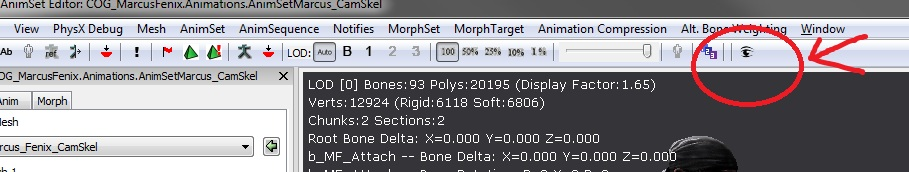
- 기본 동작
- 트랙을 찾을 수 없으면, 일치를 시도
- 여분 트랙은 수용 않음
- 동일 애니메이션 덮어씀
- 지정된 PSA 파일의 애니메이션 전부 임포트하기
- 애디티브 애니메이션 리빌드
- 임포트중의 에러 메시지는 로그창에 표시됩니다.
- 리슨 옵션을 켠 애님세트 뷰어를 여러 개 띄우지 마십시오. 계속 리임포트 됩니다.
- 로그창을 살펴 보십시오. 뭐가 성공했든 실패했든, 로그창에 출력됩니다.
청크와 섹션 보기
툴바에 있는 콘트롤을 사용하여 미리보기 패널 에서 개별 청크와 섹션을 볼 수 있습니다. 불필요한 부분이 시야를 가리지 않도록 하면서 특정 메시 부분을 쉽게 집중시켜 볼 수 있습니다. 청크 와 섹션 드롭다운이 로 설정되면, 전체 메시가 미리보기 패널 에 표시됩니다: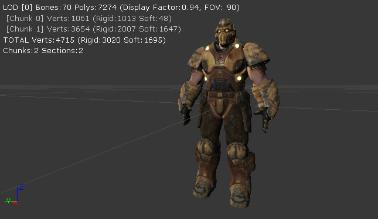
청크 드롭다운을 로 바꾸면 0 번 청크만 표시됩니다: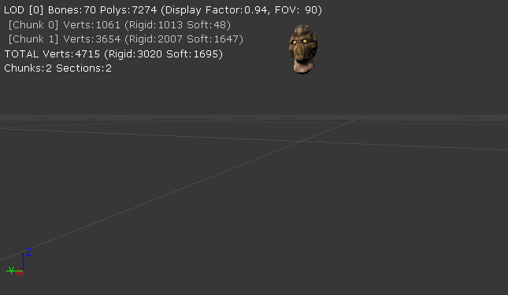
비슷하게 섹션 드롭다운을 으로 바꾸면 1번 섹션만 표시됩니다:
으로 바꾸면 1번 섹션만 표시됩니다:

커스텀 애님노티파이 버튼
표준 툴바 버튼으로 생성되는 빈 노티파이 컨테이너 대신, 프로퍼티 값이 미리 설정된 AnimNotify 특정 클래스를 만드는 버튼을 툴바에 추가시킬 수 있습니다. 커스텀 버튼은 최대 세 개 지정 가능하며, 툴팁으로 각 버튼에 지정된 내용을 알 수 있습니다.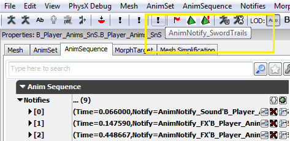
이제 버튼을 클릭하면 (정의된 클래스나 아키타입에서) 노티파이 오브젝트를 가진 노티파이가 생성되며, 옵션으로 기간 및/또는 고정 시작 시간 설정이 가능합니다.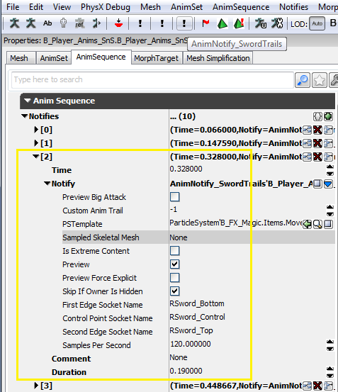
이 커스텀 버튼은Editor.ini 의 [AnimSetViewer] 아래 설정되어, 노티파이 클래스나 아키타입처럼 사용할 데이터를 나타내는 환경설정 변수로 구동됩니다.
ini 셋업 예제:
[AnimSetViewer] ;커스텀 노티파이 버튼 정의를 위해 Engine.AnimNotify_FootStep 나 SwordGame.AnimNotify_FX 같은 노티파이 클래스를 할당하거나 ;(패키지를 E_AnimNotify 라 가정하고) E_AnimNotify.FootStep_Left 같은 아키타입을 사용합니다. AnimNotifyCustom0=B_Player_Anims.Notifies.AnimTrail_Left ;기간을 통해 커스텀 노티파이 버튼에 추가적인 변경이 가능합니다. 음수 값을 입력하면 시작은 끌어당기고 끝은 커서 지점에 놓습니다. AnimNotifyCustom0Duration=1.0 ;고정 시작 시간을 지정할 수도 있는데, 이 시간에 노티파이를 설정하여, 원하는 점으로 드래그할 필요가 없습니다. AnimNotifyCustom0FixedStart=0.45